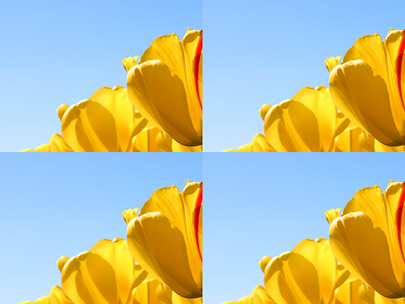

title: Tile effect description: Use the tile effect to repeat the specified region of the image. ms.assetid: C7505DBF-5F79-4407-84C4-634EA7EC06B7 keywords:
Use the tile effect to repeat the specified region of the image.
The CLSID for this effect is CLSID_D2D1Tile.
| Before |
|---|
|
| After |
|  |
ComPtr<ID2D1Effect> tileEffect;
m_d2dContext->CreateEffect(CLSID_D2D1Tile, &tileEffect);
tileEffect->SetInput(0, bitmap);
tileEffect->SetValue(D2D1_TILE_PROP_RECT, D2D1::RectF(0.0f, 0.0f, 256.0f, 192.0f));
m_d2dContext->BeginDraw();
m_d2dContext->DrawImage(tileEffect.Get());
m_d2dContext->EndDraw();
| Display name and index enumeration | Type and default value | Description |
|---|---|---|
| Rect D2D1_TILE_PROP_RECT | D2D1_VECTOR_4F {0.0f, 0.0f, 100.0f, 100.0f} | The region of the image to be tiled. This property is a D2D1_VECTOR_4F defined as: (left, top, right, bottom). The units are in DIPs. |
This effect generates a logically infinite sized bitmap.
You can tile an image and output a certain size without any additional effects by setting the size when you call ID2D1DeviceContext::DrawImage.
| Requirement | Value |
|---|---|
| Minimum supported client | Windows 8 and Platform Update for Windows 7 [desktop apps | Windows Store apps] |
| Minimum supported server | Windows 8 and Platform Update for Windows 7 [desktop apps | Windows Store apps] |
| Header | d2d1effects.h |
| Library | d2d1.lib, dxguid.lib |